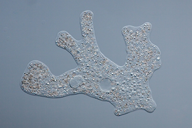
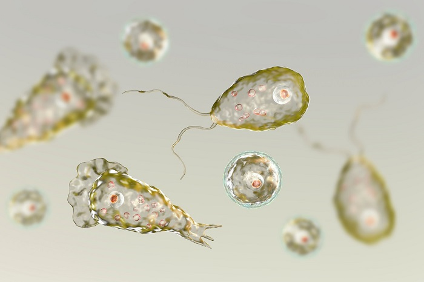
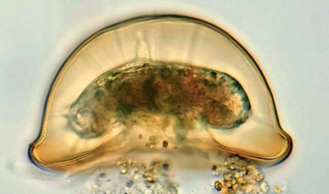
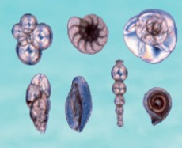
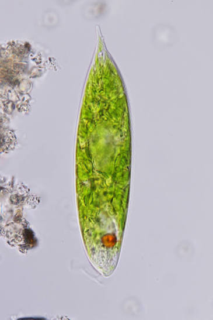
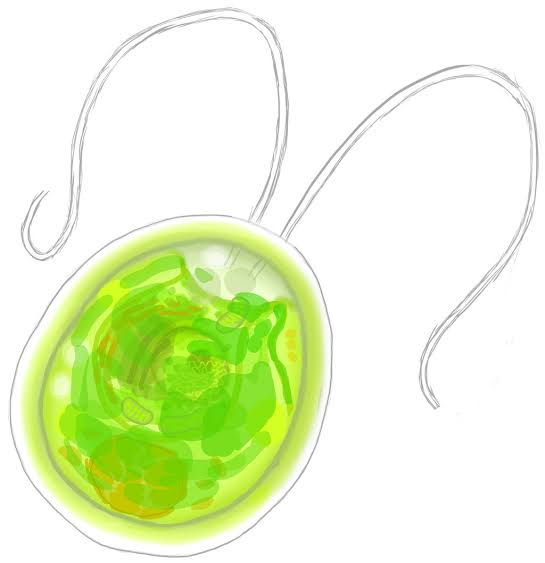
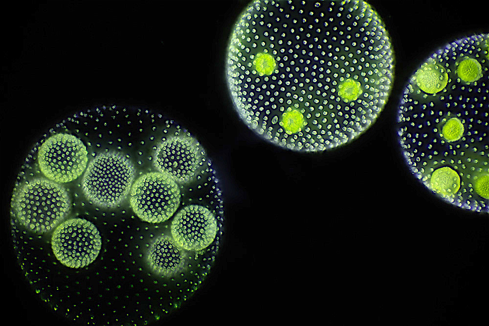
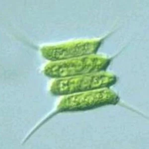
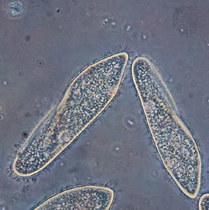
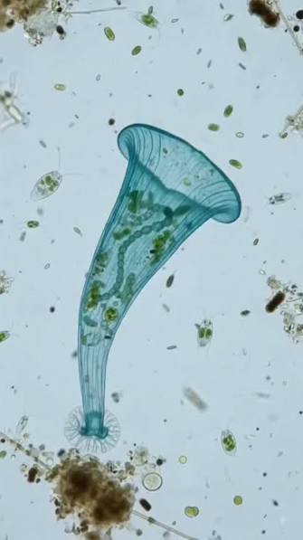

ЦАРСТВО ПРОТИСТА
Многообразие на протистите
Царство Протиста включва едноклетъчни еукариотни организми и клетката изпълнява всички жизнени процеси.
Божидар и Кирил
Основни особености на протистите
🧬 Еукариотни организми
Клетките имат ядро и мембранни органели. При едноклетъчните протисти една клетка изпълнява всички жизнени процеси.
🌊 Среда на живот
Много от тях живеят свободно в солени или сладки води. Има почвени и паразитни представители.
🔬 Разнообразие
Различават се по форма, движение, хранене, особености на тялото и размножаване.
Тип Кореноножки

Обикновена амеба
- Сладководен обитател.
- Има непостоянна форма на тялото.
- Придвижва се с псевдоподи.
- Псевдоподите участват и в храненето.
- Размножава се безполово чрез делене.
Разпространение
Свободно живеещи в солени или сладки води; по-рядко почвени обитатели; има и паразити.
Начин на придвижване
С псевдоподи („лъжливи крачка“).
Особености на тялото
Непостоянна форма. Тялото може да е голо или обвито с черупка.
Хранене
Несамостойно.
Размножаване
Предимно безполово чрез разделяне на клетката.
Представители на кореноножките

Дизентерийна амеба
Паразитен представител на кореноножките.

Арцела
Има дисковидна черупка с отвор, през който излизат псевдоподите.

Фораминифери и радиоларии
Морски кореноножки с разнообразна форма и сложен строеж.
Тип Камшичести

Зелена еуглена
- Има вретеновидна форма.
- Има едно камшиче.
- Притежава хлоропласти с хлорофил.
- Може да извършва фотосинтеза.
- Има светлочувствително очно петно.
Разпространение
Свободно живеещи в солени или сладки води; по-рядко почвени обитатели; има и паразити.
Начин на придвижване
С едно или няколко камшичета.
Особености на тялото
Формата и строежът са разнообразни.
Хранене
Може да бъде самостойно, несамостойно или смесено.
Размножаване
Предимно безполово.
Хламидомонас

Хламидомонас
- Автотрофен едноклетъчен организъм.
- Има две камшичета, разположени в предния край.
- Има хлоропласт с хлорофил.
- Извършва фотосинтеза.
- Движи се във водата с помощта на камшичетата.
Волвокс и Сценедесмус

Волвокс
Представлява сферична колония, образувана от много клетки.

Сценедесмус
Представлява колония, в която няколко клетки са разположени заедно.
🟢 Колониален организъм
Това е група клетки, които живеят свързани една с друга. Заедно те образуват колония.
Тип Ресничести

Чехълче
- Има постоянна форма на тялото.
- По повърхността му има множество реснички.
- Ресничките осигуряват движението.
- Храни се предимно с бактерии.
- Има голямо и малко ядро.
Разпространение
Свободно живеещи в солени или сладки води; по-рядко почвени обитатели; има и паразити.
Начин на придвижване
С голям брой реснички.
Особености на тялото
Постоянна форма. Имат обособена устна и анална част и две ядра.
Хранене
Несамостойно. Повечето се хранят с бактерии.
Размножаване
Безполово чрез разделяне на клетката и полово чрез конюгация.
Тръбач

Тръбач
- Има дълго фуниевидно тяло.
- По ръба на широката част има дълги реснички.
- Ресничките участват в движението.
- Участват и в улавянето на храната.
🔬 Протисти под микроскоп
Едноклетъчен организъм с непостоянна форма.
Има едно камшиче, което участва в придвижването.
Покрито е с множество реснички, които го придвижват.
Кореноножки
Псевдоподи
Временни израстъци на клетката, които променят формата ѝ и помагат за движението.Камшичести
Камшиче
Дълго, тънко израстъче, което извършва вълнообразни движения и придвижва клетката.Ресничести
Реснички
Множество къси израстъци, които се движат координирано.Биофокус

Радиолариите – част от планктона
- Радиолариите са част от планктона.
- Срещат се в морска среда.
- Имат разнообразни и сложни форми.
- Имат сложни минерални скелети.
- Участват във водните екосистеми.
📚 Обобщение
Кореноножки
Псевдоподи
Обикновена амеба
Дизентерийна амеба
Арцела
Фораминифери
Радиоларии
Камшичести
Камшичета
Зелена еуглена
Хламидомонас
Волвокс
Сценедесмус
Ресничести
Реснички
Чехълче
Тръбач
Постоянна форма
Конюгация
Кореноножки → псевдоподи
Камшичести → камшичета
Ресничести → реснички
🧠 Проверка на знанията
1. С какво се придвижват кореноножките?
2. Към кой тип принадлежи зелената еуглена?
3. С какво се придвижва чехълчето?
4. Кой организъм може да извършва фотосинтеза?
5. Кое твърдение е вярно?
Благодарим за вниманието!
Царство Протиста
Божидар и Кирил